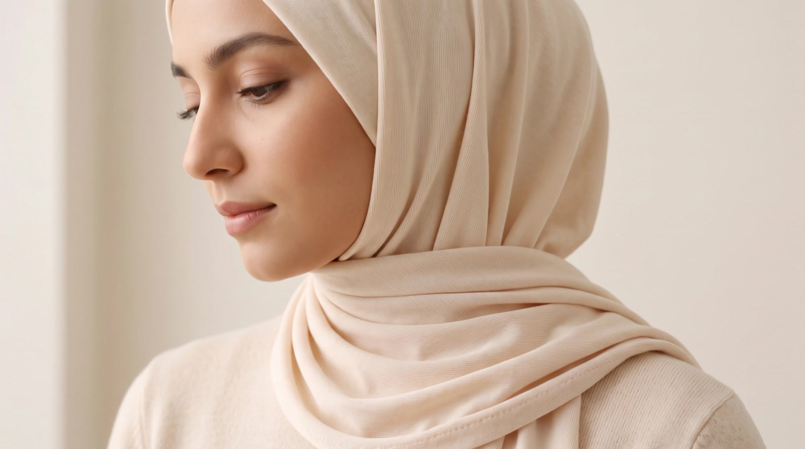
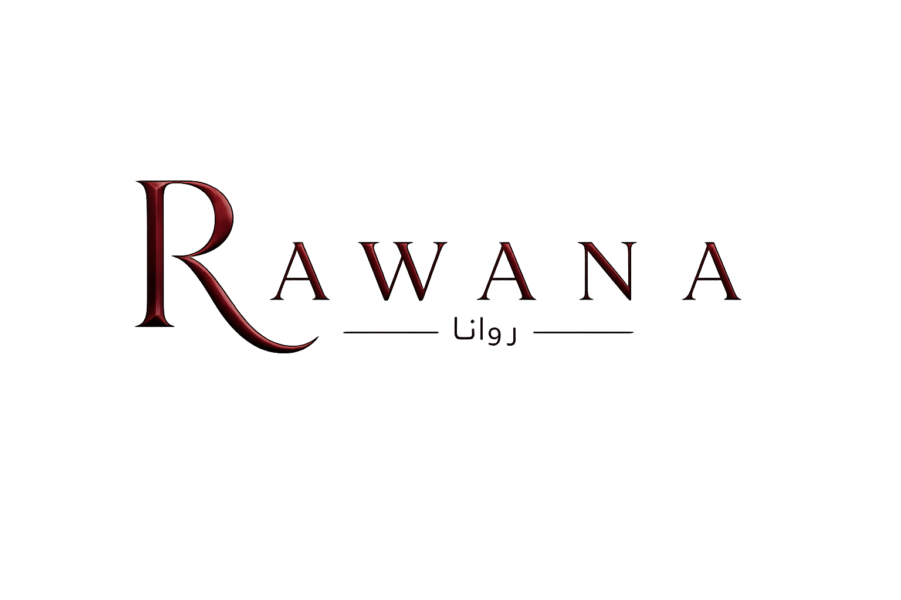
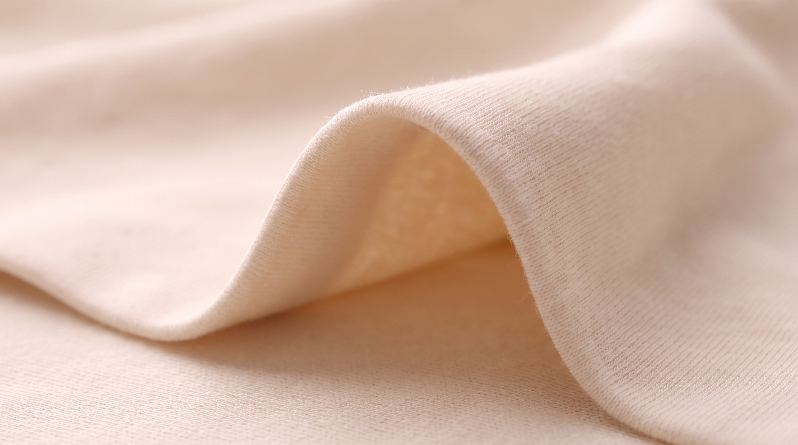
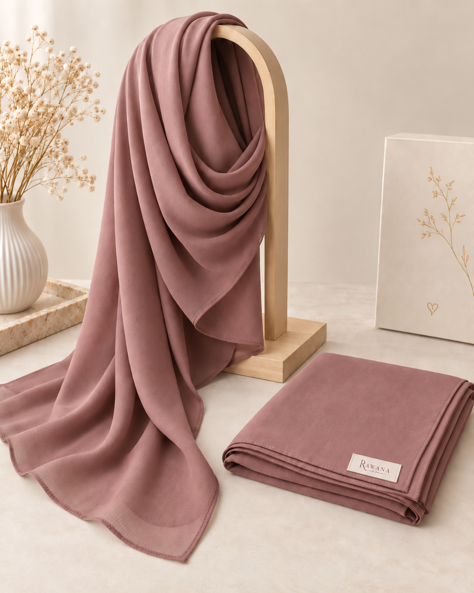

Tout commence par ce que l’on ressent.


Le Fil continu · 01Certaines images n’ont pas pu être chargées.


Le Fil continu · 01Tout commence par ce que l’on ressent.

Le Fil continu · 02 — La douceur du coton
Au plus près de vous, la matière fait toute la différence. Le coton apporte au hijab un toucher doux et une sensation de confort, du premier geste du matin aux derniers instants de la journée.
Rawana — Le voile au quotidien
Un tombé qui vous ressemble. Une matière que l’on aime retrouver. Faites une place à la douceur dans votre quotidien.
Choisir mon voileLe voile Rawana

Un tombé délicat, une douceur enveloppante. Le voile Rawana associe la richesse naturelle du coton à une touche d’élasthanne pour offrir une matière souple, qui accompagne vos gestes avec aisance. Une élégance discrète, à faire vôtre jour après jour.
Composition95 % coton 5 % élasthanne